绘制各种光谱 (Plot various kinds of spectra)¶
Multiwfn manual, p.655–693.英文原文见同名 English 章节。 Images:
../imgs/.
10-13,15,17 // 苯基部分的碳的原子序号 (Atom index of the carbons in the phenyl moiety) [直接按ENTER键] // 对基函数序号无要求 (No requirement on index of basis functions) X // 基函数必须为PX型 (Basis functions must be PX type) q // 保存碎片2 (Save fragment 2) 0 // 返回上一级菜单 (Return to last menu) 0 // 绘制两个已定义碎片间的COHP (Draw COHP between the two defined fragments) 现在你可以看到如下图所示的图形，它与4.10.1节第4部分中绘制的相应OPDOS曲线非常相似。这个例子表明COHP通常传达与OPDOS类似的信息。
4.11 绘制各种光谱 (Plot various kinds of spectra)¶
注：本节中的大多数例子也可参见我的博客文章“使用Multiwfn计算激发态之间的跃迁电偶极矩和各激发态的电偶极矩” (Using Multiwfn to calculate transition electric dipole moment between excited states and electric dipole moment of each excited state) (http://sobereva.com/224，中文)，其中还包含扩展讨论。
Multiwfn有一个非常强大而灵活的光谱绘制模块。该模块的基本原理、支持的输入文件和所有选项已在3.13节中详细介绍。在接下来的小节中我将简要举例说明该模块的用法。如果你对相关理论不熟悉，请先认真阅读3.13.1节。
值得注意的是，还有一篇文章介绍了如何结合ORCA使用Multiwfn模拟UV-Vis和ECD光谱的详细步骤，见 http://sobereva.com/485。
4.11.1 绘制NH3BF3的红外 (IR) 光谱 (Plot infrared (IR) spectrum for NH3BF3)¶
本例绘制NH3BF3的红外 (IR) 光谱。Multiwfn可以从 Gaussian 或 ORCA 振动分析任务（“freq”关键词）的输出文件中读取频率和强度。启动Multiwfn并输入以下命令
examples\spectra\NH3BF3_freq.out // 在 B3LYP/6-31G 水平下的优化和振动分析任务的 Gaussian 输出文件 (The output file of optimization and vibrational analysis task of Gaussian at B3LYP/6-31G level)
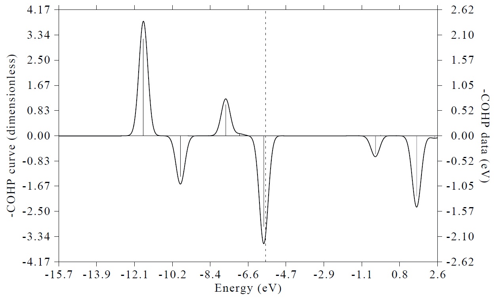
11 // 绘制光谱 (Plot spectrum) 1 // 光谱类型为IR (The type of the spectrum is IR) 0 // 立即显示光谱 (Show the spectrum right now) 你将得到如下图所示的图形
6013.86 377.95
5392.43 338.90
Molar absorption coefficient (L/mol/cm) 4771.00 4149.56 3528.13 2906.70 2285.27 1663.83 1042.40 299.84 260.79 221.73 182.68 143.62 104.57 65.51 IR intensities (km/mol)
420.97 26.46
-200.46 -12.60
左轴对应曲线（展宽后的数据），右轴对应离散线（原始跃迁数据）。半峰全宽 (FWHM)、展宽函数、坐标轴单位和范围等绘图参数可通过界面中的相应选项调节。图形和离散线/曲线的X-Y数据集可分别通过选项1和2导出。4000.03600.03200.02800.02400.02000.01600.01200.0800.0400.00.0Wavenumber (cm^-1)
注意，在选择选项0绘制光谱后，Multiwfn会在控制台窗口中打印极值信息
Extrema on the spectrum curve:
Maximum 1 X: 3578.5262 Value: 585.2897
Maximum 2 X: 3454.4848 Value: 110.4777
Maximum 3 X: 1695.2317 Value: 460.3222
Maximum 4 X: 1359.1197 Value: 1717.7809
Maximum 5 X: 1303.1010 Value: 5467.1462
...[ignored]
从该输出你可以得到吸收峰的准确位置和高度。如4.11.3节所示，极大值和极小值甚至可以直接标注在光谱上。
众所周知，在谐振子近似下产生的频率与实验振动频率存在系统偏差。为校正这一问题，应使用基频比例因子 (scale factor)，这在Multiwfn中很容易做到。我们关闭光谱，然后选择“14 设置振动频率的比例因子 (Set scale factor for vibrational frequencies)”，接着直接按ENTER键选择所有振动模式，再次直接按ENTER键采用为 B3LYP/6-31G* 水平拟合的比例因子，即0.9614，该值可在 J. Phys. Chem.,
100, 16502 (1996) 的表1中找到。此后，若重绘光谱，所得光谱即对应于校正后的结果。
注：你可以对不同振动模式使用不同的比例因子。在对一批模式使用一个比例因子后，你可以再次进入选项14，Multiwfn会询问是否将所有振动频率恢复为原始值。如果你输入n，就可以为另一批模式输入不同的比例因子，效果会叠加。
一些实验IR光谱给出的是透过率而不是吸收率。为了模拟这类光谱，你可以选择“4 设置左Y轴 (Set left Y-axis)”然后输入例如6000,0,400，将下限、上限和标签间隔设为相应值，然后输入y让程序自动缩放右Y轴。由于目前下限（0）高于上限（6000），Y轴是反转的。
绘制Raman、UV-Vis、电子/振动圆二色 (ECD/VCD) 和ROA光谱的过程与绘制IR光谱非常相似，只需使用合适的输入文件，并在进入主功能11后选择相应选项。如果用于光谱计算的量子化学程序不是Multiwfn直接支持的，你可以从相应输出文件中手动提取数据，然后按3.13.2节所示格式写入纯文本文件，该文件即可作为Multiwfn绘制光谱的输入文件。
4.11.2 绘制乙酸的UV-Vis光谱及单个跃迁的贡献 (Plot UV-Vis spectrum and contributions from individual transitions for acetic acid)¶
Multiwfn的光谱绘制模块非常灵活，不仅可以输出总光谱，还可以输出单个跃迁的贡献。当你想确定光谱的性质时，这一功能特别有用。在本节中我将展示如何实现这种分析，以乙酸的UV-Vis光谱为例。
启动Multiwfn并输入 examples\spectra\acetic_acid_TDDFT.out // 由 Gaussian 在 TD-B3LYP/cc-pVDZ 水平下计算 (Calculated at TD-B3LYP/cc-pVDZ level by Gaussian)
11 // 绘制光谱 (Plot spectrum) 3 // 光谱类型为UV-Vis (The type of the spectrum is UV-Vis) 15 // 输出包含某些单个跃迁贡献的光谱 (Output the spectrum including the contributions from certain individual transitions) 0.01 // 选择跃迁的判据为振子强度大于0.01 (The criterion of selecting transitions is oscillator strength > 0.01) UV-Vis光谱的曲线以及振子强度绝对值大于0.01的跃迁的贡献已输出到当前文件夹的 spectrum_curve.txt 中。前两列对应能量和摩尔吸光系数，其它列与跃迁模式的对应关系在屏幕上清楚地标示：
Column# Transition#
3 2 //i.e. transition S0→S2
4 3 //i.e. transition S0→S3
5 5 //i.e. transition S0→S5
6 11 //i.e. transition S0→S11
7 13 //i.e. transition S0→S13
离散线数据已输出到当前文件夹的 spectrum_line.txt 中。
现在你可以用你喜欢的程序把这两个文件中的数据作为曲线绘制在同一张图中
（如果你用Origin作图，可以直接把这两个文件拖入Origin窗口导入）。在这两个文件中，第一列应作为X轴数据，其它列应作为Y轴数据。用Origin绘制的光谱如下所示，如果你对步骤有疑问，可以参阅 "examples\spectra" 文件夹中提供的 acetic_acid_TDDFT.opj，它是 Origin 8 的.opj文件。
10000
0.24
Molar absorption coefficient (L mol-1cm-1) 9000 8000 7000 6000 5000 4000 3000 2000 Total S0→S2 S0→S3 S0→S5 S0→S11 S0→S13 0.22 0.20 0.18 0.16 0.14 0.12 0.10 0.08 0.06 0.04 Oscillator strength
1000 0.02
801001201401601802000 0.00
Wavelength (nm)
从图中，总UV-Vis光谱（黑色曲线）背后的特征现在
非常清楚。虽然 S0→S3 跃迁（146.28nm）的振子强度并不算很小（0.036），但没有吸收峰直接对应于该跃迁，因为其吸收曲线（蓝色
曲线）已完全合并到相邻的由 S0→S5 跃迁（青色曲线）造成的大吸收峰中。
如上一节所述，在选择选项0绘制光谱后，Multiwfn会直接打印光谱曲线的极值。当前情况下输出的数据为
Maximum 1 X: 113.0588 Value: 5680.9864
Maximum 2 X: 122.5085 Value: 8239.4308
Maximum 3 X: 138.0728 Value: 4667.7944
Maximum 4 X: 159.7516 Value: 2123.3506
Maximum 5 X: 213.7324 Value: 48.5312
...[ignored]
基于以上输出，我们可以计算不同跃迁对给定峰的贡献。例如，我们想研究138.0728 nm处峰的组成。在 spectrum_curve.txt 中，找到对应138.07278 nm的行，可以发现总值为4667.79439，而第4列和第5列的值分别为309.47267和4273.59757。
因此，S0→S3和S0→S5的贡献可分别计算为 309.47267/4667.79439×100% = 6.63% 和 4273.59757/4667.79439×100% = 91.55%。
在Multiwfn中可以非常容易地得到各跃迁对给定波长的主要贡献。例如，我们想了解对
极大值3（138.0728 nm）贡献最大的跃迁，因此我们输入
15 // 输出单个跃迁对光谱的贡献 (Output contributions of individual transitions to the spectrum) 0 // 计算对给定位置贡献最大的10项 (Calculate maximal 10 contributions to a given position) 138.0728 // 感兴趣的位置 (The position of interest) 你将看到
Sum of absolute values of all transitions: 4667.79444
The individual terms are ranked by magnitude of contribution:
#Transition Contribution %
5 4273.59504 91.555
3 309.47511 6.630
4 68.05085 1.458
6 11.67756 0.250
11 2.33209 0.050
8 2.13478 0.046
7 0.22284 0.005
2 0.14507 0.003
10 0.10019 0.002
9 0.06091 0.001
可以清楚地看到，S0→S5对该极大值的贡献最大（91.5%），而 S0→S3 起的作用不重要但不可忽略（贡献6.6%）。
4.11.3 绘制天冬酰胺的电子圆二色 (ECD) 光谱 (Plot electronic circular dichroism (ECD) spectrum for asparagine)¶
在本例中我们绘制天冬酰胺的电子圆二色 (ECD) 光谱。启动Multiwfn并输入
examples\spectra\Asn_TDDFT.out // 在 PBE0/6-311G 水平下的 Gaussian TDDFT任务，计算了最低30个激发态 (Gaussian TDDFT task at PBE0/6-311G level, 30 lowest excited states were calculated)
11 // 绘制光谱 (Plot spectrum) 4 // ECD (ECD) 2 // 读取速度表示下的旋光强度 (Read the rotatory strengths in velocity representation) 0 // 显示光谱 (Show the spectrum) 从所得光谱中，你会发现X轴和Y轴的标签是小数。为了使图形更美观，建议修改刻度使每个刻度的标签都是整数。因此，我们关闭当前图形并输入以下命令：
3 // 设置X轴 (Set X-axis) 120,280,20 // X轴的下限和上限以及刻度间隔 (Lower and upper limits, as well as spacing between ticks of X-axis) 4 // 设置左Y轴 (Set left Y-axis) -90,100,20 // 左Y轴的下限和上限以及刻度间隔 (Lower and upper limits, as well as spacing between ticks of left Y-axis) y // 让程序适当调节右Y轴以保证左右轴的零点在同一水平线上 (Let program properly adjust right Y-axis to guarantee that zero points of left and right axes are in the same horizontal line)
0 // 显示光谱 (Show the spectrum) 然后你将看到如下图所示的图形
注意，你可以用与4.11.2节所示完全相同的方法把总ECD光谱分解为每个跃迁的单个贡献。
从以上光谱可以看出，左轴Δε的单位标注为arb.，即“任意单位 (arbitrary unit)”。只有ECD的曲线形状才是关心的，这就是使用arb.的原因，也应该使用arb.。
在光谱上标注极小值和极大值标签 (Labelling minima and maxima labels on spectrum) Multiwfn在绘制光谱方面的优势之一是可以直接在光谱上标注极大值、极小值或两者。为了标注波长的极大值和极小值，我们输入
16 // 进入设置光谱极小值和极大值标签显示状态的界面 (Enter the interface of setting status of showing labels of spectrum minima and maxima) 1 // 改变标签的显示状态 (Change displaying status of labels) 3 // 在光谱上同时标注极大值和极小值 (Label both maxima and minima on the spectrum) 0 // 返回 (Return) 4 // 设置左Y轴 (Set left Y-axis) -100,110,20 // 使左Y轴范围稍宽一些，因为将显示标签 (Making range of left Y-axis slightly wider, because the labels will be shown) y // 相应缩放右Y轴 (Correspondingly scale right Y-axis) 0 // 再次绘制光谱 (Plot spectrum again) 现在你可以看到如下图所示的图形
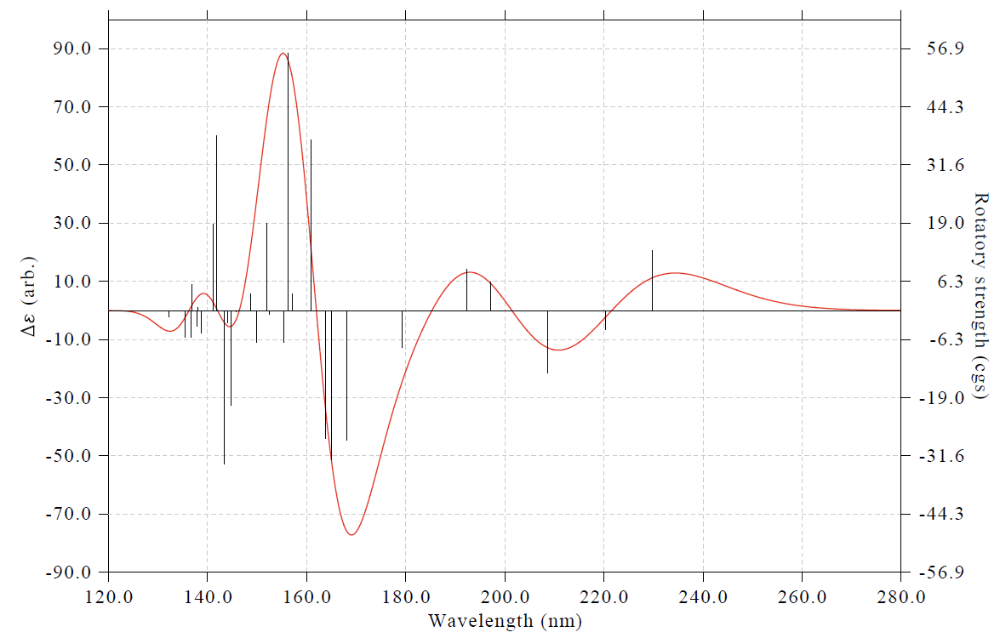
100.0 155.3 63.2
80.0 50.6
60.0 37.9
(arb.) -20.0 40.0 20.0 0.0 132.4 139.2 144.5 193.0 210.9 234.4 -12.6 25.3 12.6 0.0 Rotatory strength (cgs)
-40.0 -25.3
-60.0 -37.9
-80.0 169.1 -50.6
-100.0 -63.2
你也可以让Multiwfn在图上标注极值处的Y轴值，现在我们这样做，同时自定义一些绘图参数。输入以下命令 120.0140.0160.0180.0200.0220.0240.0260.0280.0Wavelength (nm)
16 // 进入设置光谱极小值和极大值标签显示状态的界面 (Enter the interface of setting status of showing labels of spectrum minima and maxima) 6 // 把标签内容切换为Y轴值 (Switch the content of the labels to Y-axis value) 4 // 不旋转标签（此步可选）(Do not rotate the labels (this step is optional)) 3 // 设置小数位数（此步可选）(Set decimal digits (this step is optional)) 0 // 无小数位数，即以整数显示数据 (No decimal digits, namely show data as integer) 2 // 设置标签尺寸 (Set label size) 50 // 比默认（30）更大的文本尺寸 (Larger text size than default (30)) 0 // 返回 (Return) 0 // 再次绘制光谱 (Plot spectrum again) 现在你可以看到如下图所示的图形
| | .3 | | | | | | | | | | | |
| --- | --- | --- | --- | --- | --- | --- | --- | --- | --- | --- | --- | --- |
| | 155 | | | | | | | | | | | |
| | | | | | | | | | | | | |
| | | | | | | | | | | | | |
| 2 | | | | | | 93.0 | | | 34.4 | | | |
| 139. | | | | | | 1 | | | | 2 | | |
| 132 | 144. | | | | | | | 2 | | | | |
| .4 | 5 | | | | | | 10.9 | | | | | |
| | | | | | | | | | | | | |
| | | | | | | | | | | | | |
| | | | | 169.1 | | | | | | | | |
100.0 63.2
80.0 50.6
60.0 37.9
(arb.) -20.0 40.0 20.0 0.0 -7-6 6 1313 -14 -12.6 25.3 12.6 0.0 Rotatory strength (cgs)
-40.0 -25.3
-60.0 -37.9
-80.0 -77 -50.6
-100.0 -63.2
120.0140.0160.0180.0200.0220.0240.0260.0280.0Wavelength (nm)
提示：保存和载入绘图设置 (Save and load plotting settings) 为了将来快速重绘上面的图形，我建议把绘图设置保存到文件中，即输入以下命令：
s // 保存绘图设置 (Save plotting settings) Asn_ECD.dat // 保存设置到当前文件夹的Asn_ECD.dat中 (Save settings to Asn_ECD.dat in current folder) 下次，如果你想恢复上面的图形，你只需输入 examples\spectra\Asn_TDDFT.out 11 // 绘制光谱 (Plot spectrum) 4 // ECD (ECD) 2 // 读取速度表示下的旋光强度 (Read the rotatory strengths in velocity representation) l // 载入绘图设置 (Load plotting settings) Asn_ECD.dat // 保存设置到当前文件夹的Asn_ECD.dat中 (Save settings to Asn_ECD.dat in current folder) 0 // 绘制光谱 (Plot the spectrum) 注意，上面图形对应的 Asn_ECD.dat 已在 examples\spectra 文件夹中提供。
4.11.4 绘制plumericin的构象加权UV-Vis和ECD光谱 (Plot conformational weighted UV-Vis and ECD spectra for plumericin)¶
注：本节的中文版是我的博客文章“使用Multiwfn绘制构象平均光谱” (Using Multiwfn to plot conformationally averaged spectrum) (http://sobereva.com/383)。
对于具有许多热可及构象（或构型）的柔性体系，在绘制其光谱时，考虑各种构象的加权平均至关重要，否则所得光谱不可能与实验光谱较好地比较。幸运的是，加权光谱可以非常方便地用Multiwfn绘制，我将在本节中展示如何做到。以绘制plumericin的构象加权UV-Vis和ECD光谱
| | | | | | | | | | | | | |
| --- | --- | --- | --- | --- | --- | --- | --- | --- | --- | --- | --- | --- |
| | 88 | | | | | | | | | | | |
| | | | | | | | | | | | | |
| | | | | | | | | | | | | |
| | | | | | | | | | | | | |
| | 6 | | | | | 13 | | | | 13 | | |
| -7 | -6 | | | | | | | -14 | | | | |
| | | | | | | | | | | | | |
| | | | | | | | | | | | | |
| | | | | | | | | | | | | |
| | | | | -77 | | | | | | | | |
为例。
准备工作 (Preparation) 在计算构象加权光谱之前，我们需要评估这些构象的布居数，通常使用Boltzmann权重。我们假设plumericin有四个可及构象，并合理构建它们的初始几何，然后在 B3LYP/6-31G* 水平下优化它们并做频率分析，零点能比例因子为0.9806。基于优化后的几何，在 M06-2X/def2-TZVP 水平下计算高精度单点能。最后，我们把频率分析产生的Gibbs热校正加到单点能上，得到各种构象相对准确的Gibbs能量。此后，根据这些构象间的相对Gibbs能量，按Boltzmann公式计算它们在298.15 K下的权重。然后，用 TD-PBE0/TZVP 水平为这些构象计算最低20个激发态。TDDFT任务的输出文件已在 "examples\spectra\weighted" 文件夹中提供为 a.out、b.out、c.out 和 d.out（名称是任意的，你也可以用其它文件名）。
现在我们写一个名为 multiple.txt 的纯文本文件，内容如下（名称不应改变，但可加前缀，如 plumericin_multiple.txt）：
examples\spectra\weighted\a.out 0.6046
examples\spectra\weighted\b.out 0.1950
examples\spectra\weighted\c.out 0.1686
examples\spectra\weighted\d.out 0.0317
如图所示，在 multiple.txt 中，每行包含一个构象的输出文件路径及其后我们上面计算的Boltzmann权重。下文中，这四个构象将分别称为a、b、c和d。
PS：如果你使用Linux系统，且路径中有/符号或空格，别忘了在路径两端加上双引号，否则Multiwfn无法识别文件路径，例如：
"examples/spectra/weighted/a.out" 0.6046 "examples/spectra/weighted/b.out" 0.1950 "examples/spectra/weighted/c.out" 0.1686 "examples/spectra/weighted/d.out" 0.0317
绘制构象加权UV-Vis光谱 (Plot conformational weighted UV-Vis spectrum) 启动Multiwfn并输入 examples\spectra\weighted\multiple.txt // 上述文件 (The aforementioned file) 11 // 绘制光谱 (Plot spectrum) 3 // UV-Vis (UV-Vis) 0 // 显示光谱 (Show the spectrum) 所得图形如下所示
26402.31 0.120
Molar absorption coefficient (L/mol/cm) 23674.07 20945.83 18217.59 15489.36 12761.12 10032.88 7304.64 4576.40 Weighted 1 ( 60.5%) 2 ( 19.5%) 3 ( 16.9%) 4 ( 3.2%) 0.107 0.095 0.083 0.070 0.058 0.046 0.033 0.021 Oscillator strength
1848.16 0.008
-880.08 -0.004
粗红曲线对应构象加权UV-Vis光谱，而绿、蓝、紫、黑曲线分别对应构象a、b、c和d的UV-Vis光谱。图例中还显示了每个构象的权重。从该图中我们可以非常方便地比较加权光谱与单个构象光谱的特征。137.1154.5172.0189.5206.9224.4241.8259.3276.8294.2311.7Wavelength (nm)
图中的黑色离散线代表四个构象的所有跃迁数据，它们的高度已按构象权重缩放。因此，粗红曲线可视为由图中所示的所有离散线展宽得到。
Multiwfn提供了另一种绘制单个构象光谱的模式。我们关闭上面的图形并选择一次“18 切换是否对每个体系的光谱加权 (Toggle weighting spectrum of each system)”，然后选择选项0再次查看光谱，我们将看到
25486.27 0.120
Molar absorption coefficient (L/mol/cm) 22852.69 20219.11 17585.53 14951.95 12318.37 9684.78 7051.20 4417.62 Weighted 1 ( 60.5%) 2 ( 19.5%) 3 ( 16.9%) 4 ( 3.2%) 0.107 0.095 0.083 0.070 0.058 0.046 0.033 0.021 Oscillator strength
1784.04 0.008
-849.54 -0.004
137.1154.5172.0189.5206.9224.4241.8259.3276.8294.2311.7Wavelength (nm)
| | | | | | | | | | | | | | | 2 ( 1<br/>3 ( 1<br/>4 ( 3 | 9.5%)<br/>6.9%)<br/>.2%) |
| --- | --- | --- | --- | --- | --- | --- | --- | --- | --- | --- | --- | --- | --- | --- | --- |
| | | | | | | | | | | | | | | | |
| | | | | | | | | | | | | | | | |
| | | | | | | | | | | | | | | | |
| | | | | | | | | | | | | | | | |
| | | | | | | | | | | | | | | | |
| | | | | | | | | | | | | | | | |
| | | | | | | | | | | | | | | | |
| | | | | | | | | | | | | | | | |
| | | | | | | | | | | | | | | | Weig<br/>1 ( 6 | hted<br/>0.5%) |
| --- | --- | --- | --- | --- | --- | --- | --- | --- | --- | --- | --- | --- | --- | --- | --- | --- |
| | | | | | | | | | | | | | | | 2 ( 1<br/>3 ( 1<br/>4 ( 3 | 9.5%)<br/>6.9%)<br/>.2%) |
| | | | | | | | | | | | | | | | | |
| | | | | | | | | | | | | | | | | |
| | | | | | | | | | | | | | | | | |
| | | | | | | | | | | | | | | | | |
| | | | | | | | | | | | | | | | | |
| | | | | | | | | | | | | | | | | |
| | | | | | | | | | | | | | | | | |
| | | | | | | | | | | | | | | | | |
| | | | | | | | | | | | | | | | | |
此图中所显示的每一种构象的光谱曲线均已乘以了相应的权重。显然，这张图所表示的是每种构象对构象加权光谱的贡献。换言之，粗红色曲线的高度就是所有其它曲线高度之和。可以看出，构象a（绿线）对构象加权光谱有主要贡献，它们的谱形相当相似，这是因为a的布居高达60.5%。
上图中的分立谱线现在具有不同的颜色，颜色与右上角所示的图例相对应。对于每一种构象，由于分立谱线和曲线目前具有完全相同的颜色，我们可以说，例如，绿色曲线可由将绿色分立谱线展宽直接得到。
绘制构象加权ECD光谱 使用上一节所述的相同步骤，绘制构象加权ECD光谱以及全部四种构象各自的ECD光谱。
启动Multiwfn并输入 examples\spectra\weighted\multiple.txt
Multiwfn 交互
- 11 — 绘制光谱(Plot spectrum)
- 4 — 绘制ECD(Plot ECD)
- 2 — 读取速度表示下的旋光强度(Read rotatory strengths in velocity representation)
- 0 — 显示光谱(Show the spectrum) 你将看到
153.883 33.49
Δ摩尔吸收系数差(Delta molar absorption coefficient) (L/mol/cm) 123.106 -30.777 -61.553 -92.330 92.330 61.553 30.777 0.000 Weighted 1 ( 60.5%) 2 ( 19.5%) 3 ( 16.9%) 4 ( 3.2%) -13.40 -20.09 26.79 20.09 13.40 -6.70 6.70 0.00 旋光强度(Rotatory strength) (cgs)
-123.106 -26.79
-153.883 -33.49
从这张图中你可以看到构象加权ECD光谱（粗红曲线）以及各单个构象的ECD光谱（其它曲线）。137.1 154.5 172.0 189.5 206.9 224.4 241.8 259.3 276.8 294.2 311.7 波长(Wavelength) (nm)
然后选择一次“18 切换各体系加权光谱(Toggle weighting spectrum of each system)”选项并再次绘制光谱，你将看到
| | | | | | | | | | | | | | | Weig<br/>1 ( 6 | hted<br/>0.5%) |
| --- | --- | --- | --- | --- | --- | --- | --- | --- | --- | --- | --- | --- | --- | --- | --- |
| | | | | | | | | | | | | | | 2 ( 1<br/>3 ( 1<br/>4 ( 3 | 9.5%)<br/>6.9%)<br/>.2%) |
| | | | | | | | | | | | | | | | |
| | | | | | | | | | | | | | | | |
| | | | | | | | | | | | | | | | |
| | | | | | | | | | | | | | | | |
| | | | | | | | | | | | | | | | |
| | | | | | | | | | | | | | | | |
| | | | | | | | | | | | | | | | |
| | | | | | | | | | | | | | | | |
| | | | | | | | | | | | | | | | |
56.295 33.49
Δ摩尔吸收系数差(Delta molar absorption coefficient) (L/mol/cm) -11.259 -22.518 -33.777 45.036 33.777 22.518 11.259 0.000 Weighted 1 ( 60.5%) 2 ( 19.5%) 3 ( 16.9%) 4 ( 3.2%) -13.40 -20.09 26.79 20.09 13.40 -6.70 6.70 0.00 旋光强度(Rotatory strength) (cgs)
-45.036 -26.79
-56.295 -33.49
这张图把最终的加权ECD光谱分解为单个构象的贡献。同样，由于构象a（绿色）具有很高的布居并因此主导最终的加权曲线，这两条曲线的大多数特征是相似的。然而，来自其它构象的影响不能简单地忽略。从图中很容易发现，如果缺少构象c（紫色），那么在约180 nm处就不会有一个明显的ECD峰，因为只有c在此波长处的ECD具有显著信号。137.1 154.5 172.0 189.5 206.9 224.4 241.8 259.3 276.8 294.2 311.7 波长(Wavelength) (nm)
4.11.5 绘制2-甲基环氧乙烷的Raman和预共振光谱¶
绘制Raman光谱的步骤与绘制IR光谱非常相似，唯一建议你多做的一步是在绘制光谱之前，先把量子化学程序的Raman任务直接输出的Raman活性转换为Raman强度，这样得到的光谱才能与实验光谱相比。Raman强度依赖于入射光源的波长和环境温度，而Raman活性则不依赖。这一点已在3.13.1节中强调过。在本节中，我以(2S)-2-甲基环氧乙烷为例说明如何正确地绘制Raman光谱。
启动Multiwfn并输入 examples\spectra\2-methyloxirane_Raman.out // 由Gaussian09在B3LYP/6-31G水平下计算的Raman任务的输出文件(Output file of Raman task calculated at B3LYP/6-31G level by Gaussian09)
Multiwfn 交互
- 11 — 绘制光谱(Plot spectrum)
- 2 — Raman光谱(Raman spectrum)
- 14 — 对频率施加校正因子(Apply frequency scale factor) [按ENTER键(Press ENTER button)]
采用基本校正因子(Employ the fundamental scale factor)0.9614，该因子适用于B3LYP/6-31G*水平
Multiwfn 交互
- 19 — 把Raman活性转换为强度(Convert Raman activities to intensities)
- 15000 — 入射光的波数(Wavenumber) (cm-1)。该值应与实际实验条件一致，我们在此处输入的值是任意选择的
| | | | | | | | | | | | | | | 2 ( 1<br/>3 ( 1<br/>4 ( 3 | 9.5%)<br/>6.9%)<br/>.2%) |
| --- | --- | --- | --- | --- | --- | --- | --- | --- | --- | --- | --- | --- | --- | --- | --- |
| | | | | | | | | | | | | | | | |
| | | | | | | | | | | | | | | | |
| | | | | | | | | | | | | | | | |
| | | | | | | | | | | | | | | | |
| | | | | | | | | | | | | | | | |
| | | | | | | | | | | | | | | | |
| | | | | | | | | | | | | | | | |
298.15 // 假设实验温度为298.15 K（你也可以直接按ENTER键，将使用298.15 K作为默认值）(Assume that experimental temperature is 298.15 K (You can also press ENTER button directly, 298.15 K will be used as default))
然后输入0绘制光谱，你将看到下面的Raman光谱
122.88 1244.70
110.18 1116.08
97.48 987.46
相对Raman强度(Relative Raman intensity) 84.79 72.09 59.39 46.69 34.00 858.84 730.23 601.61 472.99 344.37 Raman散射强度(Raman scattering intensities)
21.30 215.75
8.60 87.13
-4.10 -41.49
Multiwfn还可以绘制预共振Raman光谱。Gaussian的预共振Raman任务的示例输出文件为 examples\spectra\2-methyloxirane_Raman.out，相应的输入文件(.gjf)也已给出。该任务计算了入射4000.0 3600.0 3200.0 2800.0 2400.0 2000.0 1600.0 1200.0 800.0 400.0 0.0 波数(Wavenumber) (cm^-1)
波长为150 nm和140 nm时的Raman活性，它们接近在相同计算水平下的S0→S1和S0→S2的TDDFT激发能（在TD-B3LYP/6-31G*水平下分别为147.36 nm和138.81 nm）。你可以把该输出文件载入Multiwfn并像通常一样绘制Raman光谱。唯一的区别是，在进入光谱绘制界面之前，Multiwfn会要求你选择要载入其Raman活性的入射频率。如果你选择2或3，你最终得到的光谱将是相应频率处的预共振Raman；如果你选择“1: 0.00000000”，即静态极限情形，得到的光谱将与我们之前得到的完全相同。
4.11.6 同时绘制多个体系¶
在Multiwfn中，同时绘制多个体系的光谱非常容易，这些体系可以对应于不同构象、不同构型、不同分子或不同计算条件。在本节中提供两个例子。
比较不同理论方法和基组得到的光谱 在“examples\spectra\indigo”文件夹中，你可以找到在不同水平下进行的电子激发态任务的Gaussian输出文件。在本例中，我们把它们画在一起，以便能方便地比较它们的结果。
我们首先需要做的是准备一个名为multiple.txt的文件，其中包含各个体系的路径及其图例，该文件已作为 examples\spectra\indigo\multiple.txt 提供，其
内容为：
examples\spectra\indigo\ZINDO.out ZINDO
examples\spectra\indigo\TD-PBE0.out TD-PBE0/6-31G*
examples\spectra\indigo\TD-PBE0_TZVP.out TD-PBE0/def-TZVP
注意，图例绝不能仅仅是数字，否则它会被解释为相应体系的权重（见4.11.4节）。此外，在Linux系统中，如果文件路径包含/符号，不要忘记在路径两端加上双引号。
启动Multiwfn，载入multiple.txt，然后像通常一样绘制UV-Vis光谱，你将看到下图
48324.6 0.80
43331.0 ZINDO TD-PBE0/6-31G* TD-PBE0/def-TZVP 0.72
摩尔吸收系数(Molar absorption coefficient) (L mol-1 cm-1) 38337.5 33343.9 28350.4 23356.9 18363.3 13369.8 8376.3 0.63 0.55 0.47 0.39 0.30 0.22 0.14 振子强度(Oscillator strength)
3382.7 0.06
-1610.8 -0.03
从图中可以清楚地看出，基组对所得光谱只有很小的影响，而ZINDO的光谱形状与TD-PBE0的显著不同。所有体系的曲线都可经由选项2导出为curveall.txt，然后用第三方程序如Origin重新绘制。171.0 211.0 251.1 291.1 331.1 371.2 411.2 451.3 491.3 531.3 571.4 波长(Wavelength) (nm)
在“examples\spectra\indigo”文件夹中你还可以找到ZINDO_30.out，它对应于一个产生了30个激发态的ZINDO计算。你也可以把它加入multiple.txt中。
比较考虑和不考虑自旋-轨道耦合效应的光谱 ORCA程序能够在TDDFT计算中计入自旋-轨道耦合(SOC)效应，这里我们绘制并比较考虑SOC和不考虑SOC的UV-Vis光谱。请下载 http://sobereva.com/multiwfn/extrafiles/SOC-TDDFT_ORCA.zip，它是针对Ir(ppy)3配合物的TDDFT任务的ORCA输出文件，在计算中经由%tddft场中的dosoc true关键词启用了SOC处理。在输出信息中，有SOC校正前后各自的激发能和振子强度。
解压该.zip包，把.out文件放在当前文件夹下，然后创建一个内容如下的multiple.txt
Ir_ppy3.out with SOC
Ir_ppy3.out without SOC
启动Multiwfn并输入multiple.txt
| | | | | | | | | | | | | | | | | TD-PBE0 | /def-TZV | | |
| --- | --- | --- | --- | --- | --- | --- | --- | --- | --- | --- | --- | --- | --- | --- | --- | --- | --- | --- | --- |
| | | | | | | | | | | | | | | | | | | | |
| | | | | | | | | | | | | | | | | | | | |
| | | | | | | | | | | | | | | | | | | | |
| | | | | | | | | | | | | | | | | | | | |
| | | | | | | | | | | | | | | | | | | | |
| | | | | | | | | | | | | | | | | | | | |
| | | | | | | | | | | | | | | | | | | | |
| | | | | | | | | | | | | | | | | | | | |
| | | | | | | | | | | | | | | | | | | | |
Multiwfn 交互
- 11 — 绘制光谱(Plot spectrum)
- 3 — 绘制UV-Vis(Plot UV-Vis) y
对于第二条光谱，让Multiwfn使用不考虑SOC的数据(For the second spectrum, let Multiwfn use the data without SOC consideration) 然后你将进入设置光谱的界面。在略微调整设置之后，你将得到下图。显然，SOC效应对当前体系的光谱有不可忽略的影响。
50000.0 0.347
with SOC without SOC
45000.0 0.312
摩尔吸收系数(Molar absorption coefficient) (L mol-1 cm-1) 40000.0 35000.0 30000.0 25000.0 20000.0 15000.0 10000.0 0.277 0.243 0.208 0.173 0.139 0.104 0.069 振子强度(Oscillator strength)
5000.0 0.035
0.0 0.000
值得注意的是，有SOC的态数目远远多于无SOC的态数目。因为SOC效应把每个原本简并的三重态分裂为三个子能级。例如，假设TDDFT计算了50个单重态和50个三重态，那么在计入SOC校正之后，将有50+3*50=200个态。由于与SOC-TDDFT对应的态数目高于与常规TDDFT对应的态数目，当把两组（或更多组）数据模拟为理论光谱时，multiple.txt中的第一个图例必须对应于SOC-TDDFT情形，并且在为第一条光谱载入数据时，你必须选择y以让Multiwfn载入经SOC校正的TDDFT数据，如上文我所演示的。150.0 200.0 250.0 300.0 350.0 400.0 450.0 500.0 550.0 波长(Wavelength) (nm)
4.11.7 绘制手性分子S-甲基环氧乙烷的VCD和ROA光谱¶
振动圆二色(VCD)和Raman光学活性(ROA)是手性分子的重要振动光谱类型，只有手性分子才有VCD和ROA信号，见3.21节了解详情。在本例中，我将说明如何为一种典型的手性分子S-甲基环氧乙烷绘制这些光谱。
绘制VCD光谱 相应的Gaussian输入和输出文件分别为examples\spectra文件夹中的 S-methyloxirane_VCD.gjf 和 S-methyloxirane_VCD.out。如你所见，使用了freq=VCD关键词，计算在B3LYP/6-31G*水平下进行。
启动Multiwfn并输入
examples\spectra\methyloxirane_VCD.out
Multiwfn 交互
- 11 — 绘制光谱(Plot spectrum)
- 5 — VCD 14
Multiwfn 交互
- 选择所有频率(Select all frequencies) 0.9614 — 采用为B3LYP/6-31G水平预先拟合的基本校正因子(Employ fundamental scale factor prefitted for B3LYP/6-31G level)
- 0 — 显示光谱(Show the spectrum) 你将看到
2.46 31.7
1.97 25.3
1.47 19.0
0.98 12.7
(arb.) -0.49 0.49 0.00 -6.3 6.3 0.0 旋光强度(Rotatory strength)
-0.98 -12.7
-1.47 -19.0
-1.97 -25.3
-2.46 -31.7
右轴对应于尖峰的高度，它们代表旋光强度。左轴对应于由尖峰展宽得到的VCD曲线，它们代表对左、右圆偏振光吸收的差。“arb.”表示单位是任意的，因为绝对大小在化学上并不重要。4000.0 3600.0 3200.0 2800.0 2400.0 2000.0 1600.0 1200.0 800.0 400.0 0.0 波数(Wavenumber) (cm-1)
绘制ROA光谱 该绘制基于Gaussian freq=ROA任务的输出文件。Gaussian输入和输出文件分别为examples\spectra文件夹中的 S-methyloxirane_ROA.gjf 和 S-methyloxirane_ROA.out。从输入文件中可以看出，该计算考虑了三种入射光频率（500、532和600 nm）。众所周知，弥散函数对于获得准确的ROA数据很重要，因此这里使用aug-cc-pVDZ。
启动Multiwfn并输入 examples\spectra\S-methyloxirane_ROA.out
Multiwfn 交互
- 11 — 绘制光谱(Plot spectrum)
- 6 — ROA 2
总共有六种数据可供选择，这里我们选择通常研究的“ROA SCP(180)”，即背散射圆偏振ROA光谱(There are totally six kinds of data can be selected, here we select the commonly studied "ROA SCP(180)", namely backscattered circular polarization ROA spectrum)
Multiwfn 交互
- 14 — 以校正因子校正频率(Scale frequencies by a scale factor) [按ENTER键(Press ENTER button)]
0.97 // 采用0.97的基本校正因子，它适用于B3LYP/aug-cc-pVDZ水平(Employ fundamental scale factor of 0.97, which is suitable for B3LYP/aug-cc-pVDZ level)
Multiwfn 交互
- 19 — 把Gaussian输出的ROA数据转换为“真实”ROA强度(Convert the ROA data outputted by Gaussian to "real" ROA intensities)
- 532nm — 入射光波长(Wavelength of incident light)。该值应与实际实验条件一致
Multiwfn 交互
- [按ENTER键(Press ENTER button)] — 假设实验温度为298.15K(Assume that experimental temperature is 298.15K)
- 3 — 调整光谱X轴范围(Adjust range of X axis of the spectrum)
- 3200,200,400 — 下限、上限和标签间隔(Lower limit, upper limit and label interval)
- 0 — 显示光谱(Show the spectrum)
现在你可以看到下面的ROA光谱：
2532.2 34333.5
2025.8 27466.8
1519.3 20600.1
1012.9 13733.4
- -506.4 506.4 0.0 -6866.7 6866.7 0.0 ROA强度(ROA intensity)
-1012.9 -13733.4
-1519.3 -20600.1
-2025.8 -27466.8
-2532.2 -34333.5
如果你打算在发表物中使用该光谱，我建议去掉左右纵坐标上的标签，因为绝对值没有意义，只有曲线的形状才具有化学意义。要做到这一点，选择“17 其它绘图设置(Other plotting settings)”然后选择子选项2和3，当你重新绘制光谱时就会发现标签消失了。3200.0 2800.0 2400.0 2000.0 1600.0 1200.0 800.0 400.0 0.0 波数(Wavenumber) (cm-1)
4.11.8 技巧：经由shell脚本对一批文件绘制光谱¶
注：与本节对应的说明视频为：https://youtu.be/x6jp40DR24k。
在本节中，我展示如何经由shell脚本对一批输入文件绘制光谱。经由此方式，仅用一条命令就能把当前文件夹中的所有输入文件立即转换为各自的光谱图像文件！
假设你使用的是Windows系统，并且你想把 examples\spectra\indigo 文件夹中的所有Gaussian TDDFT .out文件转换为UV-Vis光谱，你应该做的是：
- 把.out文件复制到Multiwfn文件夹
- 把 examples\spectra\UV-Vis.txt 和 examples\spectra\batchspec.bat 复制到Multiwfn文件夹
- 把
settings.ini中的“isilent”设为1并保存文件
- 双击batchspec.bat 现在批处理脚本根据UV-Vis.txt中的命令调用Multiwfn处理当前文件夹中的所有.out文件。几秒钟后，你会发现所有光谱图像文件已在当前文件夹中生成，名称与.out文件相同。
如果你想为当前文件夹中的一批文件绘制IR光谱，把 examples\spectra\IR.txt 复制到当前文件夹，并把.bat脚本中的“UV-Vis.txt”替换为“IR.txt”，然后运行该.bat文件。
如果你已经知道如何在静默模式和批处理模式下运行Multiwfn，UV-Vis.txt和IR.txt的内容是很容易理解的。如果你还没有读过5.2节和5.3节，在读完它们之后你将完全理解该脚本是如何工作的。通常，在用它为你的体系生成光谱之前，你应该适当地修改.txt文件中的设置（坐标轴范围）。
经由同样的方式，你也可以用Multiwfn为一批输入文件绘制其它种类的光谱，你需要手动编写包含适当命令的.txt文件。
在Linux环境下，你也可以用shell脚本实现批量绘制。examples\spectra\batchspec.sh 是一个Bash脚本，它与上面所示的batchspec.bat具有完全相同的功能。
4.11.9 技巧：用尖峰指示跃迁能级的位置¶
在Multiwfn中，可以在模拟光谱底部绘制一组尖峰以突出特定跃迁能级的位置。在4.11.1节中我们已为NH3BF3绘制了IR光谱，它有一些特征振动模式。这一次我们将用不同颜色的尖峰在图上突出两类模式的位置：(1) B-N键的伸缩振动 (2) N-H键的伸缩振动。这些模式的序号可通过在GaussView中查看振动动画来确定。
启动Multiwfn并输入以下命令 examples\spectra\NH3BF3_freq.out
Multiwfn 交互
- 11 — 绘制光谱(Plot spectrum)
- 1 — 光谱类型为IR(The type of the spectrum is IR)
- 23 — 设置显示指示跃迁能级的尖峰的状态(Set status of showing spikes to indicate transition levels)
- 1 — 设置第一组尖峰(Set the first set of spikes)。我们想用黑色尖峰显示所有振动(We want to use black spikes to reveal all vibrations) a
黑色(Black)
Multiwfn 交互
- 2 — 设置第二组尖峰(Set the second set of spikes)
- 16-18 — 三个N-H键伸缩振动模式的序号(Indices of stretching vibration mode of the three N-H bonds)
- 1 — 红色(Red)
- 3 — 设置第三组尖峰(Set the third set of spikes)
- 4 — B-N键伸缩振动模式的序号(Index of vibration mode of B-N bond stretching)
- 2 — 绿色(Green)
- 0 — 返回(Return)
- 4 — 修改左侧Y轴(Modify Y-axis at left side)
- 0,6000,600 — 把下限和上限以及标签间隔设为(Set lower and upper limits as well as label spacing)
- y — 相应地缩放右侧Y轴(Correspondingly scale Y-axis at right side)
- 0 — 绘制图形(Plot the graph)
你将看到如下的图
此图中的红色尖峰清楚地表明N-H伸缩模式具有最高频率，而B-N伸缩振动模式（绿色尖峰）的频率约为400 cm-1。所有其它振动模式都由黑色尖峰标出。
值得注意的是，尽管第一组尖峰是黑色的并且包含所有振动模式，但第二组和第三组尖峰是在它之后绘制的，因此N-H和B-N伸缩振动模式分别显示为红色和绿色而不是黑色。
恰当地使用尖峰来指示特征跃迁可以使图形信息量大得多。例如，当你绘制UV-Vis图时，你可以用不同颜色的尖峰来
区分不同的跃迁类型（例如π→π和n→π，或局域激发和电荷转移激发）。
如果某些跃迁是简并的，你可以让Multiwfn以尖峰高度来体现简并度。要做到这一点，在选项23中定义尖峰之后，选择其子选项“-3 切换考虑简并(Toggle considering degenerate)”并输入一个用于判断简并的阈值。如果跨越两个或更多跃迁的能量差小于该阈值，则这些跃迁将被视为简并的，只有能量最低的那个会被画为高度为简并度的尖峰，而其它则不可见。例如，下面是环[18]碳的IR光谱，绿色和蓝色尖峰分别揭示面内和面外振动跃迁的位置。大多数跃迁具有二重简并（全高），而少数是非简并的，因此尖峰高度只有一半。
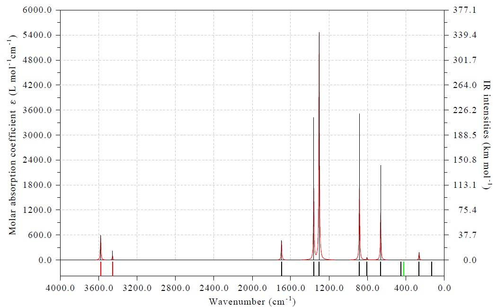
3500.0 250.0
摩尔吸收系数(Molar absorption coefficient) (L mol-1 cm-1) 3000.0 2500.0 2000.0 1500.0 1000.0 500.0 200.0 150.0 100.0 50.0 IR强度(IR intensities) (km mol-1)
0.0 0.0
2500.0 2200.0 1900.0 1600.0 1300.0 1000.0 700.0 400.0 100.0 0.0 波数(Wavenumber) (cm-1)
4.11.10 绘制NMR光谱¶
注：本节的中文版是我的博文“使用Multiwfn绘制NMR谱图”(Using Multiwfn to plot NMR spectra) (http://sobereva.com/565)，其中还包含扩展讨论。
请先阅读3.13.5节以获得关于绘制NMR光谱模块的基本知识。在本节中，将给出几个例子以展示如何在Multiwfn中容易而灵活地绘制NMR光谱。
4.11.10.1 绘制乙醛的1H和13C NMR光谱¶
在本例中我们绘制乙醛的1H和13C NMR光谱，如下所示。
examples\spectra\NMR\Acetaldehyde.out 是Gaussian 09的NMR任务的输出文件。几何结构在真空中用B3LYP/def2-SVP水平优化，而NMR任务在由SMD溶剂化模型表示的氯仿环境下用B97-2/def2-TZVP水平进行。已证明B97-2是理论评估NMR的好选择，至少对1H和13C是如此，见J. Chem. Theory Comput., 10, 572 (2014)的基准测试。四甲基硅烷(TMS)在相同计算水平下的NMR输出文件为 examples\spectra\NMR\TMS.out，从第355行和第360行可以看出，C和H的各向同性磁屏蔽值分别为186.8707和31.5143 ppm，稍后它们将被用作参考值。
我们先绘制13C NMR光谱。启动Multiwfn并输入
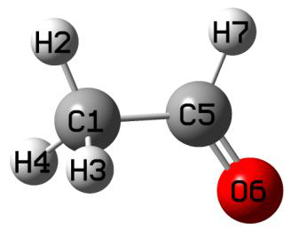
Multiwfn 交互
- examples\spectra\NMR\Acetaldehyde.out 11 — 绘制各种光谱(Plot various spectrum)
- 7 — NMR 从界面中的选项6可以发现，当前考虑的元素是碳。现在如果你直接选择选项0，你将看到13C谱，但X轴对应的是绝对屏蔽值。为了使X轴对应于化学位移，我们应该输入
Multiwfn 交互
- 7 — 设置如何确定化学位移(Set how to determine chemical shifts)
- 1 — 使用参考屏蔽值推导化学位移(Using reference shielding value to derive chemical shifts)
- 186.8707 — 碳在TMS中的参考值(Reference value of carbon in TMS)（见上文）。由于该值是内置数据，在这一步你也可以直接输入a来采用它
0 // 绘制NMR光谱(Plot NMR spectrum) 现在你可以看到
在上面的图中，黑色尖峰的高度对应于“简并度(Degeneracy)”轴，而红色曲线是由尖峰展宽得到的，它们的值对应于“信号强度(signal strength)”轴。蓝色文字指示峰对应的原子的序号。
你还可以在Multiwfn控制台窗口中看到以下信息
Term: 1 Chemical shift: 29.657 ppm Atom: 1(C )
Term: 2 Chemical shift: 208.011 ppm Atom: 5(C )
在NMR绘制界面中，有许多选项用于调整各种绘图设置，如X和Y轴范围、原子标签样式、尖峰和曲线的颜色与粗细、展宽的FWHM参数等等，请根据你的实际需要试用它们以改进光谱。
接下来，我们绘制1H NMR光谱。输入以下命令
Multiwfn 交互
- 6 — 选择绘图中考虑的元素(Choose the element considered in plotting)
- H — 氢(Hydrogen)
- 7 — 设置如何确定化学位移(Set how to determine chemical shifts)
- 1 — 使用参考屏蔽值推导化学位移(Using reference shielding value to derive chemical shifts)
- a — 如上所述，该输入对应于使用TMS的内置参考数据
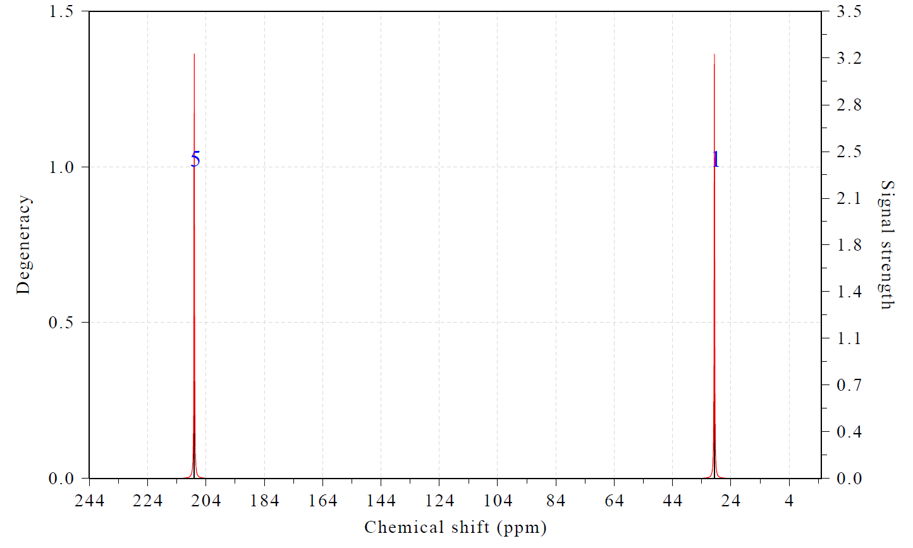
在氯仿下B97-2/def2-TZVP水平评估的(evaluated at B97-2/def2-TZVP level under chloroform)
重要的是要注意，甲基中的三个氢的屏蔽值必须取平均，因为甲基在实际环境中容易旋转，因此该基团中的氢只有一个人NMR峰。于是我们输入
Multiwfn 交互
- 10 — 对特定原子的屏蔽值取平均(Average shielding values of specific atoms)
- 2-4 — H2、H3和H4是甲基中的氢(H2, H3 and H4 are the hydrogens in the methyl group)
- 0 — 绘制光谱(Plot the spectrum) 现在你可以看到
如你所见，绘制效果相当令人满意。当前在控制台窗口中显示的信息是：
Term: 1 Chemical shift: 2.070 ppm Atom: 2(H ) 3(H ) 4(H )
Term: 2 Chemical shift: 10.333 ppm Atom: 7(H )
4.11.10.2 基于校正方法绘制吡啶的NMR光谱¶
如3.13.5节所介绍，还有另一种确定1H和
13C化学位移的方法，即校正方法(Scaling method)。经由此方法我们不需要计算参考值，而且即使使用便宜的计算水平也能得到好的化学位移，因为预先拟合的校正参数消除了大多数系统误差。在本节中我们基于校正方法绘制吡啶的NMR光谱。examples\spectra\NMR\pyridine_scale.out 是Gaussian在氯仿环境（由SMD溶剂化模型表示）下用B3LYP/6-31G水平计算的NMR任务的输出文件，而几何结构在真空中用B3LYP/6-31G水平优化。http://cheshirenmr.info 中给出的各种水平的误差统计表明，该水平是应用校正方法的最佳水平之一。
启动Multiwfn并输入 examples\spectra\NMR\pyridine_scale.out
Multiwfn 交互
- 11 — 绘制各种光谱(Plot various spectrum)
- 7 — NMR 7
设置斜率和截距以经由校正方法确定化学位移(Set slope and intercept to determine chemical shifts by scaling method)
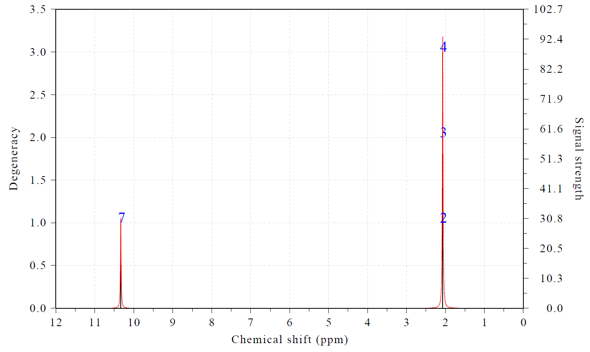
a // 使用为带SMD(chloroform)的B3LYP/6-31G水平预先拟合的内置斜率和截距参数，即13C NMR的斜率为-0.9449、截距为188.4418(Use built-in slope and intercept parameters prefitted for B3LYP/6-31G with SMD(chloroform) level, namely slope of -0.9449 and intercept of 188.4418 for 13C NMR)
0 // 绘制NMR光谱(Plot NMR spectrum) 现在你可以看到
由于吡啶的对称性，有两个峰显示出二重简并特征。
类似地，你可以经由校正方法绘制1H NMR光谱，即输入
Multiwfn 交互
- 6 — 选择绘图中考虑的元素(Choose the element considered in plotting) H
- 7 — 设置如何确定化学位移(Set how to determine chemical shifts)
- 2 — 设置斜率和截距以经由校正方法确定化学位移(Set slope and intercept to determine chemical shift by scaling method) a
- 0 — 绘制光谱(Plot the spectrum)
4.11.10.3 绘制缬氨酸的构象加权NMR光谱¶
在本节中，我将说明如何绘制构象加权NMR光谱。缬氨酸是一种必需氨基酸，它在水环境中有两种构象体，如下所示。括号中的值是我在水中理论估计的构象权重。
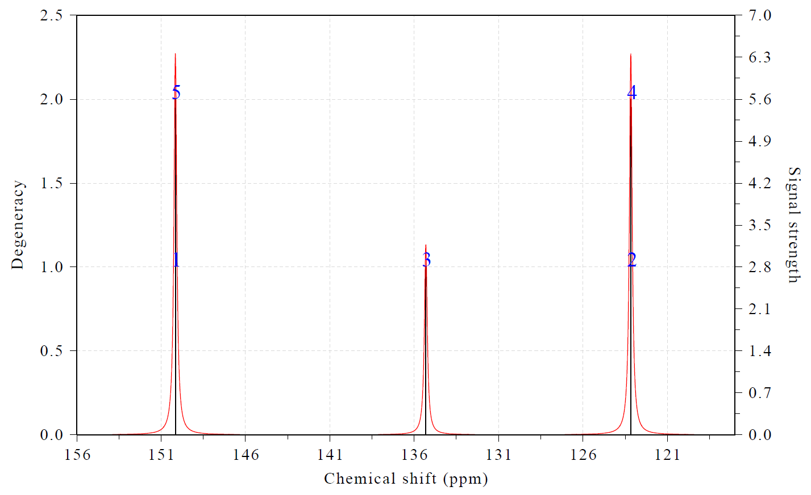
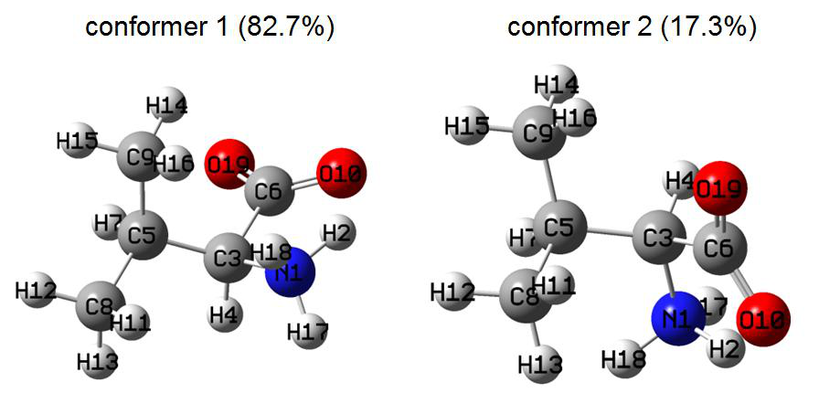
在本节中我们将模拟缬氨酸在水中的1H NMR光谱，并与在D2O溶剂中测量的实验光谱比较。注意，由于质子化氨基中的三个氢在重水环境中被氘完全取代，我们需要从光谱中消除它的贡献。此外，我们需要对两个甲基中每个甲基的氢的屏蔽值取平均。
“examples\spectra\NMR\valine”文件夹中的conf1.out和conf2.out是Gaussian 16的NMR任务的输出文件，NMR计算在B97-2/def2-TZVP水平进行，几何结构在B3LYP-D3(BJ)/6-311G**水平优化，在两种计算中都采用IEFPCM模型表示水环境。
我们首先创建一个名为multiple.txt的文本文件，其内容如下（文件名前可加前缀，如valine_multiple.txt）：
examples\spectra\NMR\valine\conf1.out 0.825
examples\spectra\NMR\valine\conf2.out 0.175
如你所见，我们已指定了两个输入文件及相应的构象权重。注意，如果你使用的是Linux版，内容必须如下书写，否则路径无法被识别，下文亦然
"examples/spectra/NMR/valine/conf1.out" 0.825
"examples/spectra/NMR/valine/conf2.out" 0.175
现在启动Multiwfn并输入 multiple.txt
Multiwfn 交互
- 11 — 绘制各种光谱(Plot various spectrum)
- 7 — NMR 6
设置如何确定化学位移(Set how to determine chemical shifts)
Multiwfn 交互
- 1 — 设置参考屏蔽值以确定化学位移(Set reference shielding value to determine chemical shift)
- 31.8294 — TMS参考值，来自 examples\spectra\NMR\valine\TMS.out，它是以与当前体系完全相同的方式计算的(The TMS reference value that comes from examples\spectra\NMR\valine\TMS.out, which was calculated via exactly the same way as current system)
Multiwfn 交互
- 10 — 对特定原子的屏蔽值取平均(Average shielding values of specific atoms)
- 11-13 — 三个甲基氢(Three methyl group hydrogens)
- 10 — 对特定原子的屏蔽值取平均(Average shielding values of specific atoms)
- 14-16 — 三个甲基氢(Three methyl group hydrogens)
- 11 — 设置特定原子的强度(Set strength of specific atoms)
- 2,17,18 — 氨基中的三个氢(The three hydrogens in the amino group)
- 0 — 使它们在光谱中完全不可见(Making them fully invisible in the spectrum)
- 0 — 绘制NMR光谱(Plot the NMR spectrum) 现在你看到以下光谱
为了改善图的效果，我们关闭图形然后输入
Multiwfn 交互
- 3 — 设置X轴的下限和上限(Set lower and upper limits of X-axis)
- 4,0,0.5 — 从4.0到0.0 ppm，标签间隔为0.5 ppm(From 4.0 to 0.0 ppm with label spacing of 0.5 ppm)
- 12 — 不显示尖峰以使光谱更清晰(Do not show spikes to make the spectrum clearer)
- 18 — 其它绘图设置(Other plotting settings)
- 5 — 设置图例的X位置(Set X position of legends)
- 1300 — 把图例位置移到比默认位置更靠左(Moving the position of the legends more left than default position)
- 0 — 返回(Return) 现在我们选择选项0重新绘制，当前的光谱已经相当令人满意
缬氨酸在水中的实验1H NMR光谱见 https://hmdb.ca/spectra/nmr_one_d/1582，把上面的图与之比较你会发现我们模拟的NMR光谱是合理的，抓住了实验光谱的所有主要特征。
注意，如果你只想绘制加权光谱或只绘制两个构象体各自的光谱，你可以在选项17中选择相应的子选项。
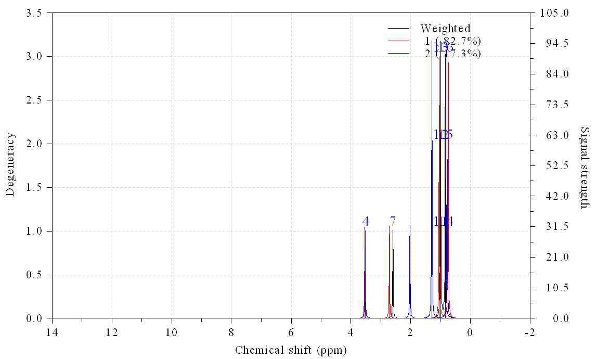
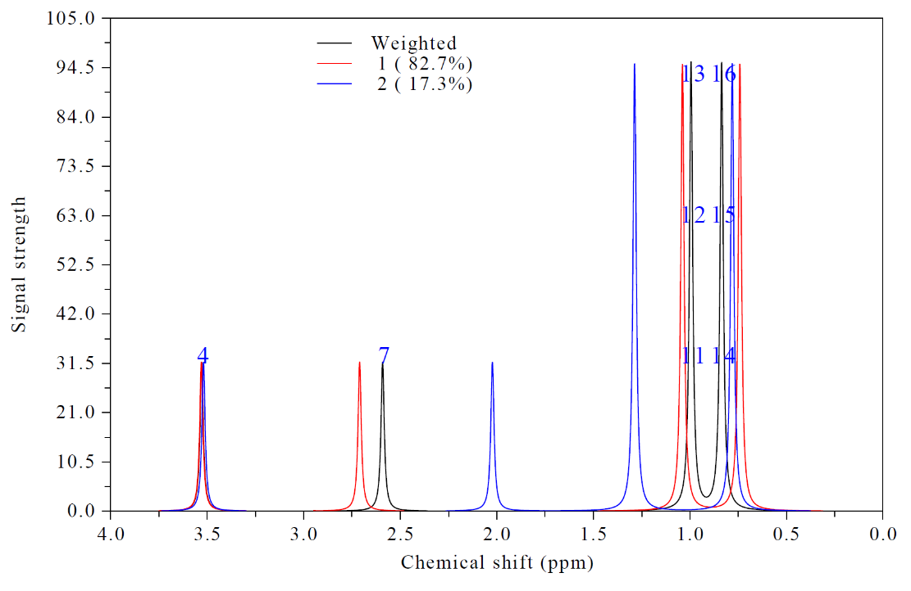
4.11.10.4 同时绘制多个体系¶
Multiwfn能够容易地在同一张图上绘制多个体系的NMR光谱，如下例所示，前提是所有体系必须具有相同的原子数。在本例中，我们将把缬氨酸的两个构象体视为两个独立的体系。
创建一个名为multple.txt的文件（文件名前可加额外前缀），内容如下，每行包含一个输入文件的路径和相应的图例
examples\spectra\NMR\valine\conf1.out conformer 1
examples\spectra\NMR\valine\conf2.out conformer 2
启动Multiwfn，载入multiple.txt，然后依次运行 examples\spectra\NMR\valine\drawmulti.txt 文件中所记录的所有命令，你将看到下图。每个命令的含义根据屏幕上的提示很容易理解。
4.11.11 绘制BODIPY的荧光光谱¶
在本例中，我说明如何绘制荧光光谱。绘制荧光光谱与绘制UV-Vis吸收光谱的区别有两点：
(1) 要绘制荧光光谱，你应该使用发射态（发射光子的激发态）的优化几何结构。而要绘制吸收光谱，你应该使用基态的优化几何结构。
(2) 要绘制荧光光谱，应把除发射态之外的所有计算激发态的振子强度手动设为零，以去除无关态对光谱的贡献。
几乎所有分子都满足Kasha规则，即荧光发射只对应于
S1→S0跃迁。因此，发射态通常是S1态。
接下来，我们将为著名的BODIPY分子绘制荧光发射：
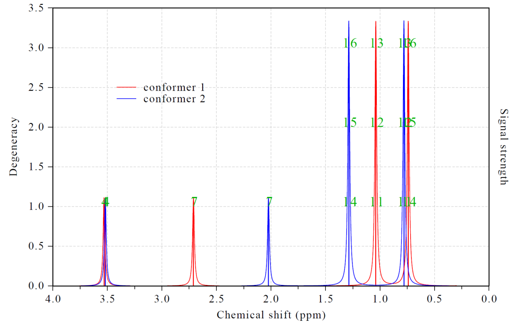
假设该体系适用 Kasha 规则，因此应对 S1 态进行几何优化。本任务在 TD-B3LYP/6-311G* 水平下 Gaussian 16 A.03 的输出文件为 examples\excit\BODIPY_S1_opt.out，同时还做了频率分析，因为我们想检查是否存在虚频（结果未发现虚频）。注意此处 “TD” 关键词未加额外选项，这种情况下将求解最低的三个激发态 S1、S2 和 S3，而感兴趣的态（要优化的态）默认为第一激发态（S1）。该默认设置非常适合用于优化 S1 态。
启动 Multiwfn 并输入 examples\excit\BODIPY_S1_opt.out
Multiwfn 交互
- 11 — 绘制光谱 (Plot spectrum)
- 3 — 紫外-可见光谱 (UV-Vis) 之后，在最终几何构型（S1 几何构型）下所有激发态的激发能和振子强度都被载入 Multiwfn。然后我们通过输入以下命令清除 S2 和 S3 态的振子强度：
Multiwfn 交互
- 20 — 修改振子强度 (Modify oscillator strengths)
- 2,3 — 选择 S2 和 S3 (Select S2 and S3)
- 0 — 新的振子强度 (New oscillator strength) 此时可输入选项 0 以绘制光谱，但默认的坐标轴设置并不理想。因此我们输入以下命令
Multiwfn 交互
- 3 — 设置 X 轴上下限 (Set lower and upper limit of X-axis)
- 300,750,50 — 下限、上限和步长，单位为 nm
- 4 — 设置左侧 Y 轴 (Set left Y-axis)
- 0,1100,100 — 下限、上限和步长
- y — 相应缩放右侧 Y 轴 (Correspondingly scale the right Y-axis)
选择选项 0 之后，你将看到荧光光谱
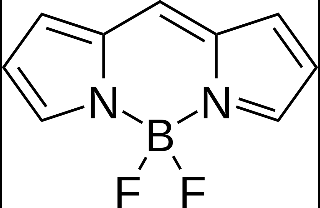
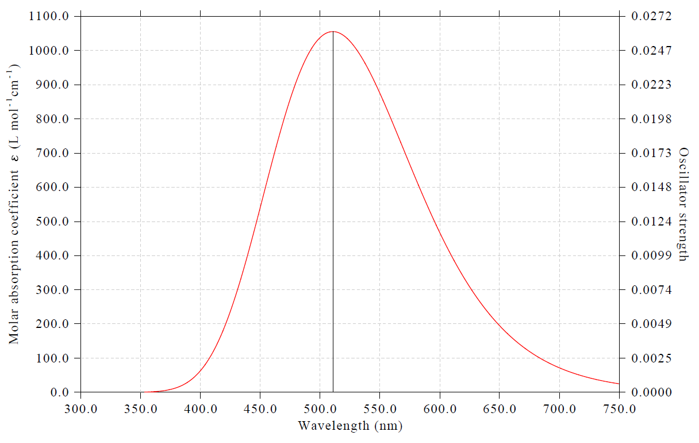
如控制台窗口所示，我们模拟的光谱峰位为 510.7 nm，与实验峰位 512 nm（见 https://en.wikipedia.org/wiki/BODIPY）非常接近。
关于绘制磷光光谱 值得注意的是，如果你是 Gaussian 用户，则无法用上述步骤绘制磷光光谱
（根据 Kasha 规则对应于 T1→S0 发射），因为若不考虑自旋-轨道耦合（SOC）效应，由于自旋禁阻，振子强度必定严格为零，而 Gaussian 的 TDDFT 计算无法考虑 SOC 效应。要绘制磷光光谱，我建议的步骤是：
(1) 用你喜欢的量子化学程序优化 T1 几何构型 (2) 基于 T1 几何构型，用 Dalton 程序在考虑 SOC 的情况下用 TDDFT 理论计算 T1 态的振子强度和激发能
(3) 从 Dalton 输出文件中提取 T1 的振子强度和激发能，并手动将其写入 Multiwfn 可识别格式的纯文本文件，格式见 3.12.2 节。
(4) 将该纯文本文件载入 Multiwfn，然后进入主功能 11，选择 “紫外-可见光谱 (UV-Vis)”，再直接选择选项 0 绘制光谱，即得到磷光光谱。
4.11.12 绘制部分振动光谱 (PVS) 和部分¶
振动电子态密度 (PVDOS)¶
部分振动光谱（partial vibrational spectrum，PVS）的概念已在 3.13.6 节介绍，如果缺乏相关知识请先仔细阅读。在接下来的几节中，我将说明如何用 Multiwfn 绘制它，以直观理解各种振动光谱的本质。你会发现 PVS 是一种非常通用而灵活的分析方法。同时，还将说明部分振动电子态密度（partial vibrational density-of-states，PVDOS）的绘制，这是一种以图形方式揭示所有（包括光谱非活性）振动模式组成的直观方法。
4.11.12.1 C18···B9N9 复合物红外光谱的 PVS-NC 分解分析¶
在本例中，我们用 PVS-NC 方法直观理解分子复合物 C18···B9N9 红外光谱所对应振动模式的组成，其优化后的几何构型如下所示
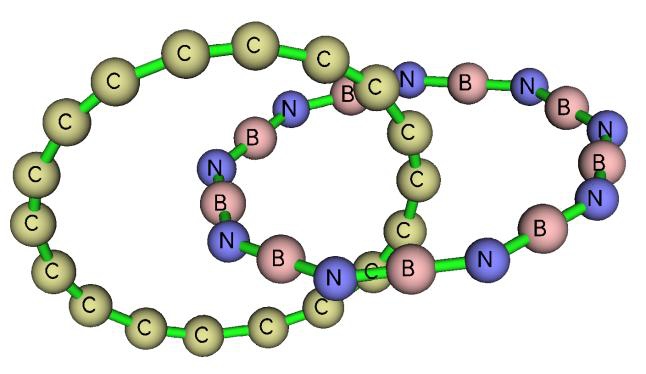
将用作绘制红外光谱和 PVS-NC 曲线的输入文件是 Gaussian 16 程序在 ωB97XD/6-311G* 水平下频率分析任务的输出文件，即 examples\spectra\C18-B9N9.out。注意在 “freq” 关键词中指定了 “intmodes” 选项，该选项要求 Gaussian 打印每个振动模式中冗余内坐标（RICs）的组成，加此选项的原因是，在后续某个例子中我将说明如何基于由 RICs 构成的片段绘制 PVS-NC 图。如果你只想把片段定义为原子集合，则不需要此选项。
绘制普通红外光谱
我们先绘制 C18···B9N9 复合物的普通红外光谱。启动 Multiwfn 并输入 examples\spectra\C18-B9N9.out
Multiwfn 交互
- 11 — 绘制各类光谱 (Plot various kinds of spectrum)
- 1 — 红外光谱 (IR)
- 0 — 在屏幕上绘制光谱 (Plot spectrum on screen)
从上图中可以看到许多峰，它们的本质是什么？通过 PVS-NC 曲线，你可以很容易理解分子片段的运动对上图中可观测振动模式所对应简正坐标（由相应简正坐标表征）的参与程度。而通过 PVS-I，你可以直观理解分子片段对上图中各峰红外吸收强度的贡献是否显著。因此，PVS-NC 和 PVS-I 分别侧重于揭示光谱活性振动模式的不同方面。在本节余下部分，我将说明 PVS-NC 曲线的绘制，而在下一节，将举例说明 PVS-I 的绘制。更具体地说，本节绘制的 PVS-NC 是 PVS-NC(atom)，因为我们将把每个片段定义为原子集合。
绘制 PVS-NC(atom) 图 假设我们想研究 C18 原子和 B9N9 原子的运动如何对上述红外光谱所对应振动的振动做出贡献，应在光谱绘制界面输入以下命令
24 // 设置部分振动光谱 (PVS) 或振动电子态密度 (VDOS) (Set partial vibrational spectra (PVS) or vibrational DOS (VDOS))
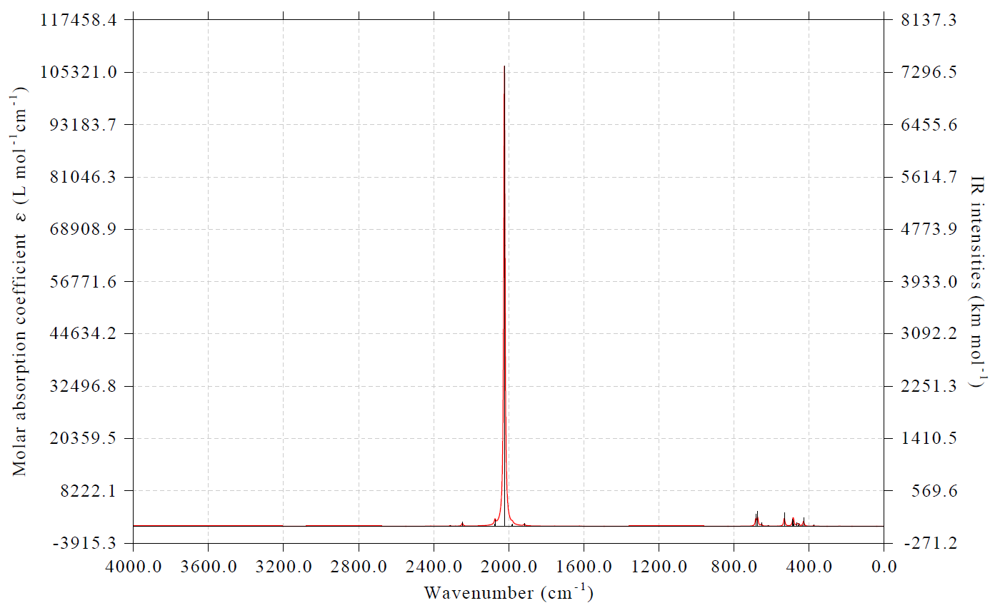
Multiwfn 交互
- 1 — 定义 PVS 片段 1 (Define PVS fragment 1)
- 1-18 — C18 中的原子 (Atoms in C18)
- 2 — 定义 PVS 片段 2 (Define PVS fragment 2)
- 19-36 — B9N9 中的原子 (Atoms in B9N9) l
设置 PVS 的图例 (Set legend for PVS)
Multiwfn 交互
- cyclo[18]carbon — C18 的全名 (Full name of C18)
- 2 — 设置 PVS 的图例 (Set legend for PVS) B9N9
- q — 保存并返回 (Save and return)
- q — 生成 PVS 数据并返回光谱绘制界面 (Generate PVS data and return to spectrum plotting interface)
从屏幕上可以找到我们刚才定义的两个片段在每个振动模式中的组成：
Vibrational mode 1 ( 7.20 cm^-1 )
Fragment 1 Composition: 62.1646 %
Fragment 2 Composition: 37.8354 %
Vibrational mode 2 ( 10.65 cm^-1 )
Fragment 1 Composition: 39.3017 %
Fragment 2 Composition: 60.6983 %
...[ignored]
选择选项 0 绘制光谱，然后你将在屏幕上看到如下图
事实上，图中有三条曲线：总红外光谱（黑色）、片段 1（C18，红色）的 PVS 和片段 2（B9N9，蓝色）的 PVS，后两者之和对应前者。然而，从当前图中我们只能清楚地看到在约 2000 cm-1 处有一个异常强的吸收。因为该峰完全呈蓝色，我们可以断定该吸收必定纯粹对应于 B9N9 的振动。
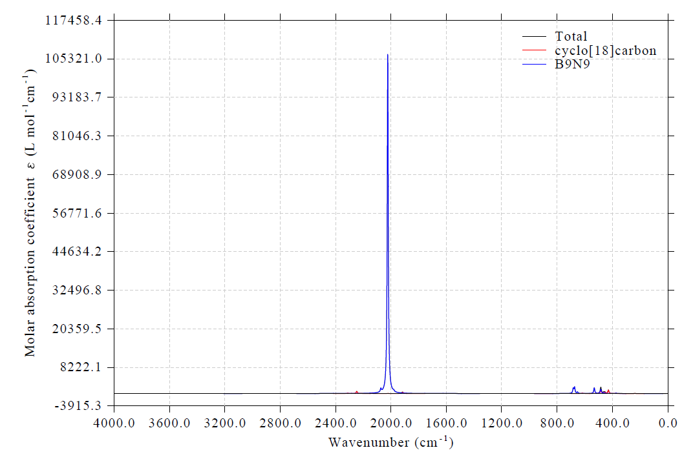
从上图可以看到在低频区有许多中等强度的红外吸收。为考察其细节，我们输入以下命令
Multiwfn 交互
- 3 — 设置 X 轴上下限 (Set lower and upper limit of X-axis)
- 750,350,50 — X 轴下限、上限和间隔 (Lower limit, upper limit and interval of X-axis)
- 4 — 设置左侧 Y 轴 (Set left Y-axis)
- 0,3000,300 — 左侧 Y 轴下限、上限和间隔 (Lower limit, upper limit and interval of left Y-axis) y
设置光谱极小值和极大值标签的显示状态 (Set status of showing labels of spectrum minima and maxima)
Multiwfn 交互
- 1 — 改变标签的显示状态 (Change displaying status of labels)
- 1 — 在光谱上显示极大值 (Show maxima on the spectrum)
- 0 — 返回 (Return)
- 0 — 绘制光谱 (Plot spectrum)
此时你可以看到如下图
该图信息量很大。例如，可以清楚地看到 428.8 cm-1 处的峰几乎完全来自 C18 的振动，531.4 cm-1 处的峰几乎只对应于 B9N9 的振动，而 484.0 cm-1 处的峰则表现出明显的耦合振动特征。与上述峰最对应的模式的简正坐标如下所示，与我们从 PVS 图中观察到的预期一致。
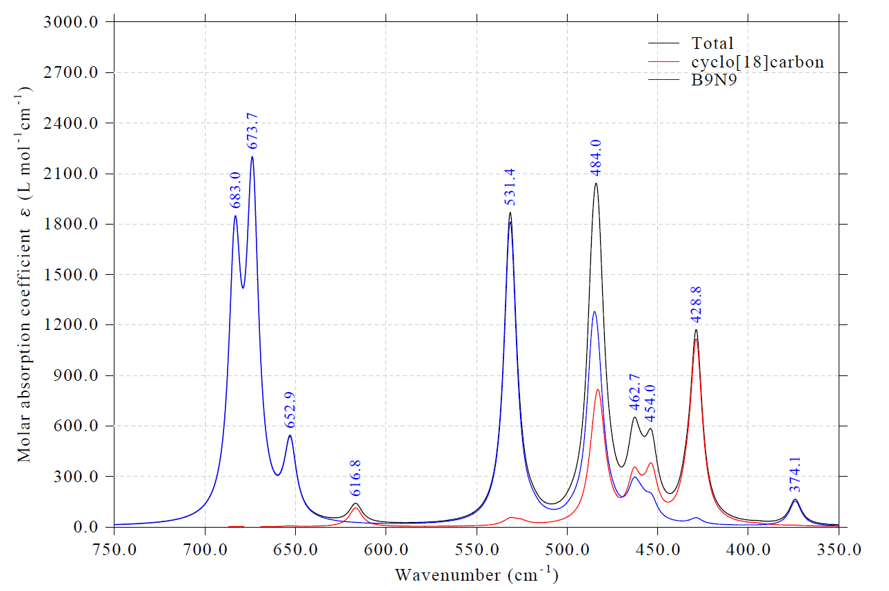
尽管在本节中我只说明了定义两个片段，但在 Multiwfn 中实际上最多可定义多达 10 个片段，所有 PVS 曲线可同时显示。片段的并集不一定对应于整个体系。
值得强调的是，PVS 曲线仅展示各片段对各振动模式简正坐标的贡献，它们并不直接反映片段对吸收强度的贡献。换句话说，某片段对某振动模式简正坐标的百分比贡献与其对该振动模式强度的贡献并不成正比。在讨论 PVS/OPVS 曲线时应正确认识这一点。例如，从一个非极性基团的 PVS 曲线中，你可能观察到一个明显的红外活性模式在其简正坐标中有该基团振动的很大组成，你不应据此得出该强红外吸收源于该非极性基团振动的结论。
绘制基于原子定义片段之间的 OPVS 图 我们还可以绘制两个片段之间的 OPVS 曲线，以非常方便地考察它们在不同波数范围内的集体振动贡献。要绘制 C18 与 B9N9 之间的 OPVS，我们输入
Multiwfn 交互
- 24 — 设置部分和重叠振动光谱 (Set partial and overlap vibrational spectra)
- 0 — 设置 OPVS (Set OPVS)
- 1,2 — OPVS 将在片段 1 和 2 之间绘制 (OPVS will be drawn between fragments 1 and 2) d
为清晰起见关闭片段 1 的 PVS 显示 (Disable showing PVS of fragment 1 for clarity)
Multiwfn 交互
- 2 — 为清晰起见关闭片段 2 的 PVS 显示 (Disable showing PVS of fragment 2 for clarity)
- q — 返回 (Return)
- q — 返回光谱绘制界面 (Return to spectrum plotting interface)
- 0 — 再次绘制光谱 (Plot spectrum again)
此时你可以看到总红外光谱以及 OPVS 曲线
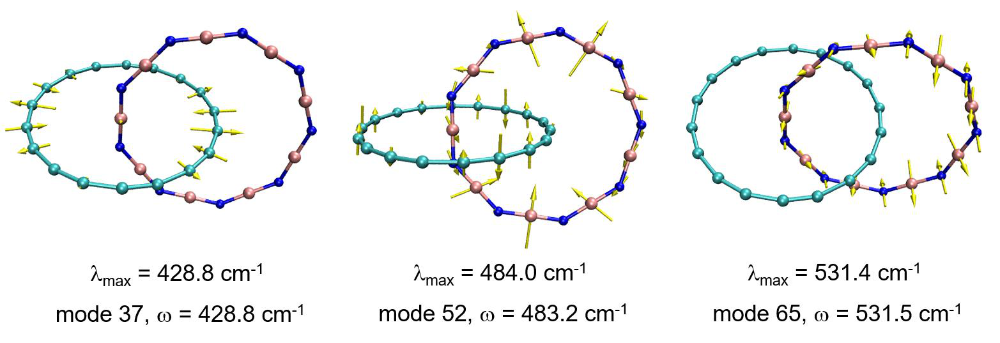
该 OPVS 图生动展示了对各红外吸收的耦合贡献。在 450 至 500 cm-1 区域，耦合效应很强；特别是在 462.7 cm-1 处，绿色曲线非常接近黑色曲线，因此根据 3.13.6 节所述 OPVS 的定义，我们知道相应的红外活性模式应完全且几乎均等地由 C18 和 B9N9 两部分的振动贡献。从两片段在该波数处的 PVS 曲线可以证实这一点。相比之下，在大于 650 cm-1 的波数区绿色曲线可忽略不计，因此 652.9、673.7 和 683.0 cm-1 处的峰必定仅由两片段中的某一个贡献。该例表明 OPVS 对快速理解不同波数范围内各片段间的振动耦合非常有帮助。
4.11.12.2 C18···B9N9 复合物红外光谱的 PVS-I 分解分析¶
待写
4.11.12.3 C18···B9N9 复合物振动光谱的 PVDOS 分析¶
本节待写 简而言之，VDOS 与假设所有振动模式强度均为 1 的振动光谱非常相似。PVDOS/OPVDOS 与 VDOS 的关系等同于 PVS/OPVS 与实际振动光谱的关系。
在本节中我说明如何绘制 VDOS、片段的部分 VDOS（PVDOS）以及片段间的重叠 PVDOS（OPVDOS）。仍以上一节的 C18···B9N9 复合物为例，并将两个分子定义为两个片段。
启动 Multiwfn 并输入
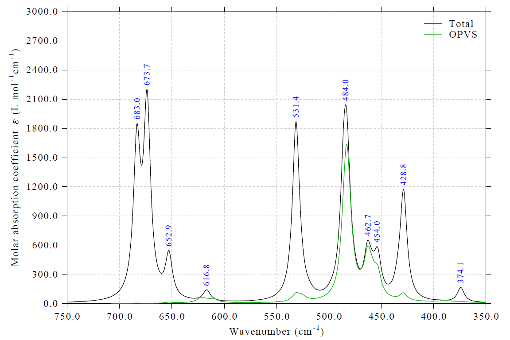
Multiwfn 交互
- examples\spectra\C18-B9N9.out 11 — 绘制各类光谱 (Plot various kinds of spectrum)
- 1 — 红外光谱 (IR)
- 24 — 设置部分和重叠振动光谱 (Set partial and overlap vibrational spectra)
- 1 — 定义 PVS 片段 1 (Define PVS fragment 1)
- 1-18 — C18 中的原子 (Atoms in C18)
- 2 — 定义 PVS 片段 2 (Define PVS fragment 2)
- 19-36 — B9N9 中的原子 (Atoms in B9N9) l
设置 PVS 的图例 (Set legend for PVS)
Multiwfn 交互
- cyclo[18]carbon — C18 的全名 (Full name of C18)
- 2 — 设置 PVS 的图例 (Set legend for PVS) B9N9
- q — 返回 (Return)
- 0 — 设置 OPVS (Set OPVS)
- 1,2 — 在片段 1 和 2 之间绘制 (Plot between fragments 1 and 2)
- v — 切换为绘制振动电子态密度而非光谱。此时 PVS 对应于 PVDOS，OPVS 对应于 OPVDOS (Toggle plotting vibrational DOS instead of spectrum. Then PVS will correspond to PVDOS, and OPVS will correspond to OPVDOS)
Multiwfn 交互
- q — 生成 PVS 数据并返回光谱绘制界面 (Generate PVS data and return to spectrum plotting interface)
- 3 — 设置 X 轴上下限 (Set lower and upper limit of X-axis)
- 2400,0,300 — 下限、上限和刻度间隔 (Lower limit, upper limit and interval between ticks)
- 17 — 其他绘图设置 (Other plotting settings)
- 11 — 设置图例位置 (Set position of legends)
- 8 — 左上角 (Upper left corner)
- 0 — 返回光谱绘制界面 (Return to spectrum plotting interface)
- 0 — 绘制光谱 (Plot spectrum) 此时你可以看到如下图
从图中可以发现，振动模式在 600 cm-1 以上稀疏分布，而在 600 cm-1 以下振动模式的分布要密集得多。此外，还发现 600 cm-1 以上的振动模式在 C18 与 B9N9 之间未显示可察觉的耦合运动，强烈的片段间耦合模式密集出现在约 500 cm-1 附近和 100 cm-1 以下。若将 X 轴范围调整为仅绘制 0~600 cm-1 区域，这一点可看得更清楚，如下所示。还通过选项 16 标注了总光谱的峰位。
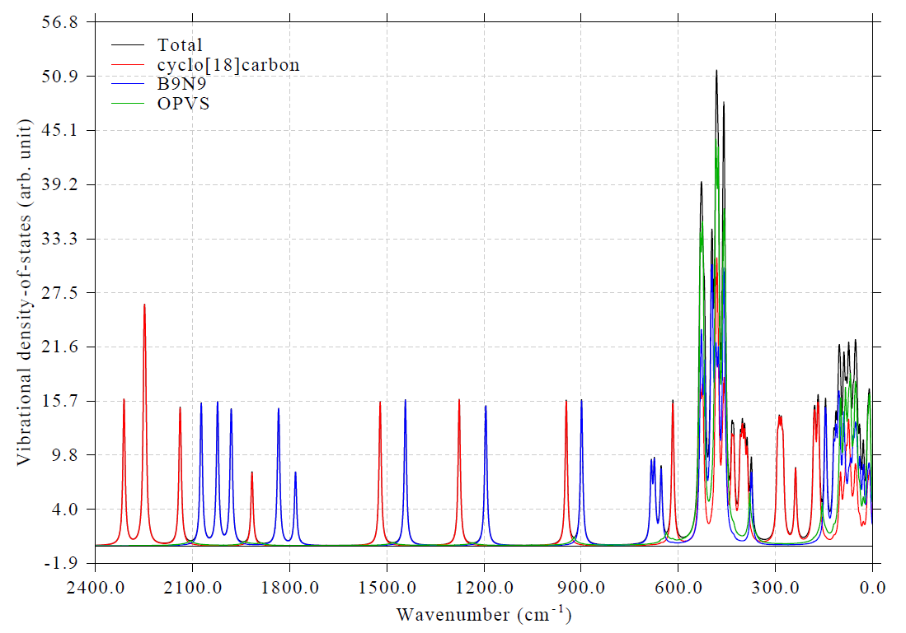
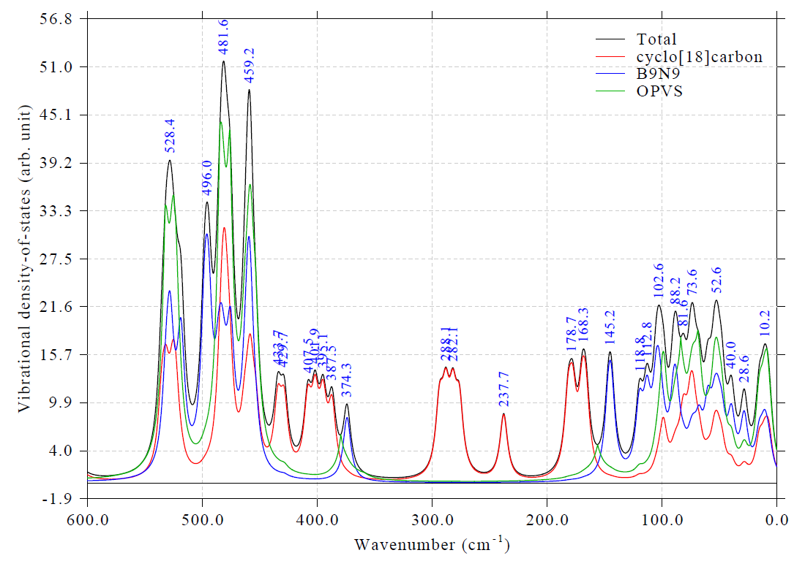
VDOS 与振动光谱的一个很大不同在于，前者中所有模式对曲线均等贡献，换句话说，你可以观察到所有模式；而在后者中，只有强度不可忽略的模式才对曲线有贡献，从而在视觉上可被察觉。
4.11.12.4 苯丙氨酸 VCD 光谱的 PVS-NC 分解分析¶
待写
4.11.12.5 绘制方向红外光谱¶
待写
4.11.13 绘制方向紫外-可见光谱¶
注：本专题的中文版是我的博客文章“使用 Multiwfn 模拟特定方向的紫外-可见吸收光谱”（http://sobereva.com/648）。
如 3.13.1 节所述，可绘制方向紫外-可见光谱，以研究生体系与沿特定方向振荡的电场相互作用引起的光吸收，如果你对光谱特征的各向异性感兴趣，这特别有价值。
在本节中，我们研究具有以下结构和取向的碳纳米管片段：
首先，我们绘制该体系对应于与在 XY 平面内振荡的电场相互作用的紫外-可见光谱。现在，启动 Multiwfn 并输入
examples\spectra\CNT66_TDDFT.out // Gaussian 在 PBE0/6-31G 水平下的 TDDFT 输出文件，计算了 100 个激发态 (TDDFT output file of Gaussian at PBE0/6-31G level, 100 excited states were calculated)
Multiwfn 交互
- 11 — 绘制光谱 (Plotting spectra)
- -3 — 绘制方向紫外-可见光谱 (Plotting directional UV-Vis spectrum)
- 4 — XY 方向 (XY direction)
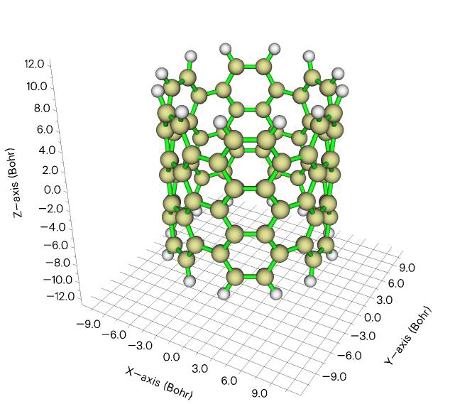
Multiwfn 交互
- 0 — 绘制光谱 (Plot spectrum) 关闭屏幕上显示的图形，并输入以下命令调整绘图设置
- 3 — 调整 X 轴 (Adjust X-axis)
- 200,800,50 — 下限和上限，以及标签间隔 (Lower and upper limits, as well as label interval)
- 3 — 调整左侧 Y 轴 (Adjust left Y-axis)
- 200,800,50 — 下限和上限，以及标签间隔 (Lower and upper limits, as well as label interval) y
类似地，你可以绘制对应于与沿 Z 方向振荡的电场相互作用的紫外-可见光谱。
在绘制上述 XY 和 Z 光谱后，若通过选项 2 将曲线数据和直线数据导出为 .txt 文件，然后可将其一并导入 Origin 等第三方软件，绘制包含总、XY 和 Z 数据的图，如下所示，其中 “Total” 曲线对应于 XY 与 Z 曲线之和，也对应于通常意义上的紫外-可见光谱。
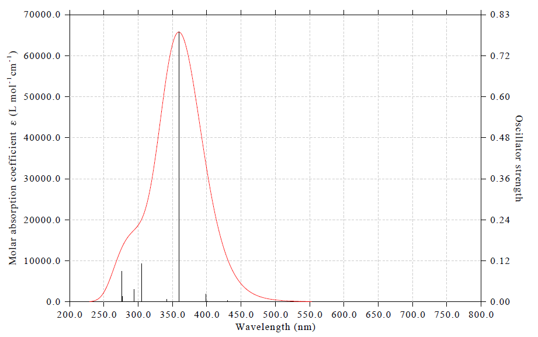
在上图中，可以看到约 370 nm 处的最强吸收完全来自该体系与在 XY 平面内振荡的电场的相互作用。由于电场的振荡方向垂直于光的传播方向，XY 曲线可理解为沿 Z 方向传播的光的吸收曲线。上图中 Z 曲线对约 300 和 480 nm 处的吸收贡献最大，它对应于在 XY 平面上传播且偏振沿 Z 方向的光的吸收。该观察也表明，只有这些波长处的电子激发具有显著的 Z 方向跃迁偶极矩。
该例表明，对于具有显著各向异性特征的体系，绘制特定方向的紫外-可见光谱显然有助于理解其吸收光谱的内在本质。
4.11.14 预测靛蓝和诱惑红的颜色¶
注：本例的中文版是“通过量子化学计算和 Multiwfn 程序预测化学物质的颜色”（http://sobereva.com/662），其中还包含更多讨论。
请阅读 3.13.7 节以理解 Multiwfn 中颜色预测功能的基本特征。在本节中，我们将基于理论计算预测靛蓝的颜色，然后基于其实验紫外-可见光谱预测诱惑红的颜色。
4.11.14.1 基于理论计算预测靛蓝的颜色¶
examples\spectra\indigo_TD-B3LYP_water.out 是在 IEFPCM 溶剂化模型表示的水环境中、在 TD-B3LYP/def2-TZVP 水平下计算电子激发态的 Gaussian 输出文件。几何构型已在 B3LYP/6-311G* 水平下对基态优化。启动 Multiwfn 并载入该文件，然后输入
Multiwfn 交互
- 11 — 绘制光谱 (Plotting spectrum)
- 3 — 紫外-可见光谱 (UV-Vis)
- 25 — 基于可见光范围内的光谱评估颜色 (Evaluate color based on the spectrum in visible range) Multiwfn 首先显示 360-830 nm 内的紫外-可见光谱，见下图（注：可见光范围为 380-760 nm，或 400-700 nm。360-830 nm 的范围对应于三刺激值函数有定义的范围，其参与内部颜色预测过程）：
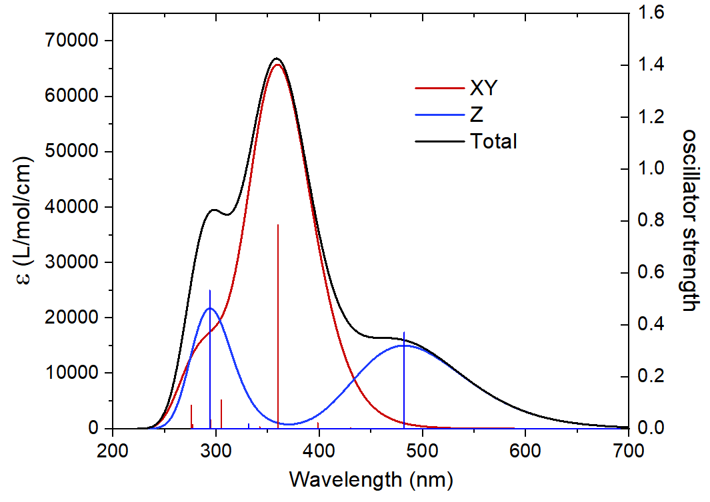
关闭窗口后，Multiwfn 显示基于光谱曲线预测的颜色：
“color” 标签下显示的颜色是对应于紫外-可见光谱的颜色，而“互补色 (complementary color)”下方显示的颜色对应于靛蓝透射光和反射光的颜色。窗口底部显示的两种颜色是通过平移 RGB 值使颜色的最大值分量等于 255（sRGB 色彩空间上限）而得到的窗口上方两种颜色的对应色。简而言之，窗口右下角所示的深蓝色可视为靛蓝水溶液实际呈现的颜色。该预测颜色与靛蓝的实际颜色完全一致，是极为成功的预测！
从 Multiwfn 的文本窗口中，你还可以找到图形窗口上显示的四种颜色的参数和一些中间数据：
CIE1931 XYZ: 1077992.509 1123653.902 188673.482
Fractional CIE1931 XYZ: 0.9593634718 1.0000000000 0.1679106720
CIE1931 xy: 0.4509825283 0.4700851571
Note the R,G,B values shown below correspond to standard RGB (sRGB) color space
RGB (0-1): 1.487926 0.953110 0.026876
RGB (0-255): 379 243 7
Note: The color exceeds sRGB color space! Now the R,G,B values are scaled into
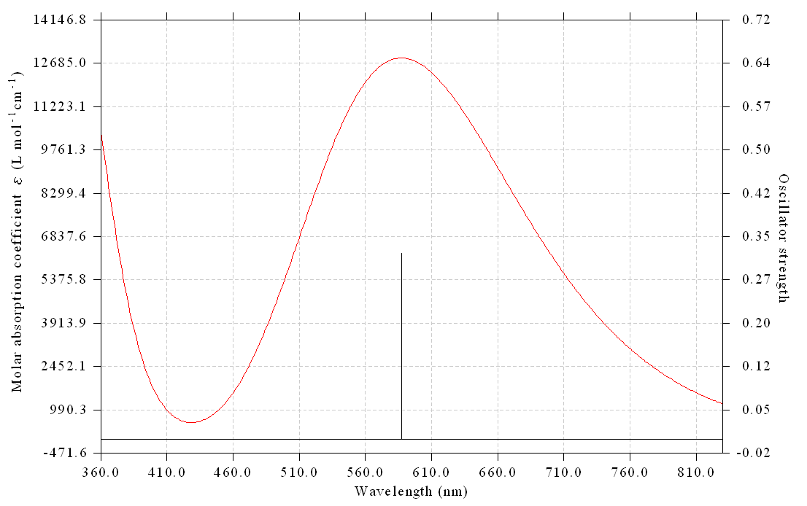
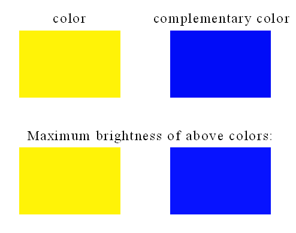